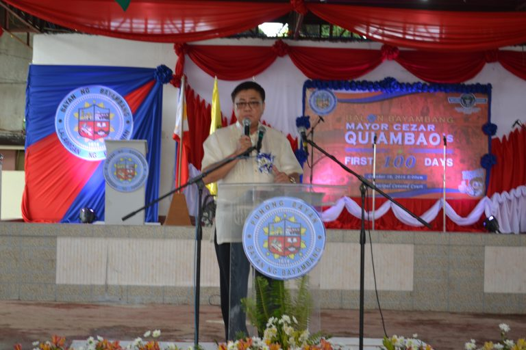

State of the Municipality Address

Newly elected mayor Dr. Cezar T. Quiambao had barely warmed his seat, but he was already in the thick of municipal work to deliver his solemn election campaign promises. Officially taking the reins on July 1 from an outgoing administration naturally involved a lot of familiarization tours, consultations with various constituents, and strategizing and planning work.
With a strong mandate for change echoing that of President Duterte’s administration, it was like starting from scratch for the new mayor-elect, who is fondly called by his erstwhile monicker in the corporate world, ‘CTQ.’ But backed up by an unprecedented mix of young blood, returning native sons and daughters, and citizens in their senior years, Mayor CTQ’s reign is gifted with electric energy, the strong yearning to serve and give back to a waiting hometown, and the wisdom of age.
The first 100 days of MCTQ’s administration were definitely as high-spirited as they were busy. Topmost of the priorities was the organization of a transition team called Transparency Team within the first month. This involves selecting members equipped with an understanding of government operation, reports, documentation, and other related matters to ensure a proper, effective and transparent turnover.
Reorganizing the various executive departments was the second topmost priority. Here, the existing organizational structure was reviewed and a revised chart was prepared. This resulted in – in CTQ’s own words – “an organization that is more responsive and effective in addressing the needs of the people.” This was backed up by the creation of the right Sangguniang Bayan (SB) resolutions needed to deliver the strategy of implementation.
Strategic planning was conducted next, and this was carried out by inviting the DILG Local Government Academy as modulator. With this, the Mayor was able to come up with the Local Development Agenda in consonance with national government programs.
Mandated councils or special bodies were reorganized and reconstituted next. This was done by appointing corresponding members of the special bodies in accordance with RA 7160, otherwise known as the Local Government Code of 1991. Special bodies or councils were reconstituted to assist the Executive and Legislative offices in setting the direction of economic and social development of the town.
The financial performance of the LGU was determined for three reasons: to review the previous budget, especially for the 1Q and 2Q 2016; to prepare the budget for 2017 as per Local Development Agenda; and to identify financial sources and generate enough funds to compensate for the requirement of the budget. The result was a better understanding of the LGU’s financial conditions.
Familiarization with the LGU operations and making it more corporate in approach without going beyond the mandate was up next in the agenda.
Relationship was developed between the national government agencies that cater the same services with LGU such as skills training and development for poverty reduction program. This was specifically achieved by establishing relationship and coordination between and among TESDA, DTI, DOST, ALS, and ABOT ALAM of DepEd in the conduct of training programs.
Executive and Legislative Agenda conferences were conducted with the help of the DILG MLGOO as modulator to introduce and formulate Executive Agenda (plans and programs) with Legislative Agenda (legislation). The aim was to have a harmonized Executive and Legislative Agenda to establish protocol in passing local measures and proper implementation.
Community consultations with barangay leaders were conducted next. Regular meetings were held with Barangay Councils to present the Local Development Agenda. The aim was to make the barangay leaders be aware of and well-informed on the LGU Development Agenda.
Consultations with different organizations were likewise conducted. Various institutions were mobilized, including NGOs, education sector, senior citizens, farmers, and religious to establish good mutual relationship in achieving the LGU Development Agenda. A persuasive force was thereby created in promoting the development of the municipality.
Present and future plans of action were formulated by establishing a Short-Term Plan (1 year), Medium-Term Plan (2 years) and Long-Term Plan (3 years).
Four additional LGU offices were created through legislation and provision of funding: General Services Office (GSO), Public Order and Safety Office (POSO), Management Information System Office, and Tourism Office. These new offices are vital in implementing quality service, providing the public with an organized direction of LGU facility and services. POSO is specifically meant to provide the locals with a better traffic and parking management system.
By the 100th day, several doable projects had been either implemented or completed, including the establishment of a CCTV Command Center as a tool to help deter and solve crimes, street lights along the streets of the Poblacion, the imposition of a zoning scheme for the Public Market Block II and III, initiation of a community-based Sustainable Livelihood Training Program, awarding of scholarships to poor but deserving students, rehabilitation of Solid Waste Management and re-establishment of the Material Recovery Facility, and the creation of the emergency hotline #4357 (HELP).
Summary of Accomplishments
- Administration
- Good Governance
- Created a Transparency Team
- Passed 29 resolutions and 2 ordinances, with one resolution ordering the demolition of a symbol of corruption: the commercial building built by the Homeowners Savings and Loan Association, Inc. and/or Philippine Deposit and Insurance Corporation (PDIC) on part of the municipal plaza, which is a property of the municipality Adopting the internal rules of procedure for CY 2016-2019 of the Sangguniang Bayan of the Municipal Government of Bayambang, Province of Pangasinan
- – Resolution confirming the appointment of Atty. Rodelynn Rajini A. Sagarino as Municipal Administrator
- – Authorization of the Office of the Mayor, Honorable Cezar T. Quiambo, and the Municipal Treasurer Luisita B. Danan to be the official signatories in all transactions, except those of the Sangguniang Bayan
- – Authorization of the Office of the Mayor, Honorable Raul R. Sabangan, and the Municipal Treasurer Luisita B. Danan to be the official signatories in all transactions of the Sangguniang Bayan
- – Authorizing Honorable Mayor Cezar T. Quiambao to coordinate, confer and dialogue with the Polytechnic University of the Philippines, and undertake all procedures necessary in order to establish an Open University in the Municipality of Bayambang
- – Authorizing the Office of the Municipal Mayor to Enter into a Memorandum of Agreement with Honorable Eulalio C. Diaz III, in his capacity as Administrator of Land Registration Authority (LRA), for the LRA’s provision of data or information on titled properties falling within the jurisdiction of the Municipality of Bayambang, including electronic maps generated from the technical description provided in the titles, under LRA’s land titling computerization project
- – Authorizing the Office of the Municipal Mayor to explore all available financing/credit facilities that can provide the most economical financial loan arrangement that is most advantageous to the local government of Bayambang
- – Reconstituting the Personnel Selection Board of the Municipality of Bayambang
- – Designating Victoria J. Malagotnot as procuring personnel and Gernalyn Santos and Jovelie Junio as inspector of all supplies under capital outlay of the Office of Vice Mayor, Sangguniang Bayan and SB Secretary
- – Authorizing Honorable Mayor Cezar T. Quiambao to enter into a Memorandum of Agreement (MOA) with the Department of Interior and Local Government (DILG) for the implementation of the Sagana at Ligtas na Tubig sa Lahat (SALINTUBIG) Program
- – Authorizing Municipal Vice Mayor and the Municipal Treasurer to be the official signatories to Multi-Purpose Loan (Salary Loan) to be availed by the elected officials and employees holding permanent positions of the Office of Sangguniang Bayan with the Landbank of the Philippines, Postal Bank and Development Bank of the Philippines
- – Approval of the Annual Investment Program (AIP) of the Municipality of Bayambang for Calendar Year 2016
- – Confirming the appointment of Mrs. Iluminada J. Mabanglo as Chairman of the Office of the Senior Citizens Affairs (OSCA) of the Municipality of Bayambang
- – Authorizing Honorable Cezar T. Quiambao in his capacity as Mayor of the Municipality of Bayambang to enter into a Memorandum of Agreement in the implementation of the Livelihood Program (SLP) with Director Marcelo Nicomedes J. Castillo in his capacity as Regional Director of Department of Social Welfare and Development-Field Office I (DSWD-FO1)
- – Authorizing Honorable Mayor Cezar T. Quiambao and Municipal Treasurer Luisita B. Danan to represent the Municipality of Bayambang to enter into a Memorandum of Agreement (MOA) with the Development Bank of the Philippines (DBP) represented herein by AVP Maria Dolores C. Guevara, in her capacity as head, Regional Marketing Center-Western Luzon to avail of the Salary Loan Program offered to the municipal officials and employees
- – Authorizing Municipal Mayor, Honorable Cezar T. Quiambao, to make representations with the PENR Officer and CENR Officer, Land Management Service, DENR, Dagupan City, Pangasinan for the continuation of the processing of the application for award of a special patent over Cad. Lot No. 310 (Bayambang I Central School) containing an area of 31,650 square meters
- – Granting additional allowances to PSupt. Cirilo B. Acosta, Jr. Officer-in-Charge, Bayambang Municipal Police Station in the amount of five thousand pesos (Php5,000)
- – Endorsing the Land Transportation Franchising and Regulatory Board for an additional units of public utility jeepney of the Bayambang-Basista-San Carlos Jeepney Operators and Drivers Association
- – Authorizing the Municipal Mayor to request from Engr. Abelardo Palad to allow the allotment of 500 square meters for the construction of a Fire Department on the parcel of land (5,000 square meters) he has donated to the Municipality of Bayambang
- – Authorizing the Municipal Mayor, Dr. Cezar T. Quiambao, to adopt urgent remedial measures necessary in the recovery of possession of the original location of Bayambang I Central School covered by Tax Declaration by the Regional Trial Court, Branch 56, San Carlos City…
- – Authorizing the Municipal Mayor to sign a deed of donation for the transfer of the 500 square meters of land owned by Engr. Abelardo Palad to the Bureau of Fire for the construction of the Fire Department Building
- – Resolution ordering the Homeowners Savings and Loan Association, Inc. and/or Philippine Deposit and Insurance Corporation (PDIC) to cause the immediate dismantling/demolition of the commercial building built by the bank from the property of the municipality within thirty (30) days from receipt of order
- – Authorizing the Municipal Mayor to sign on behalf of the Municipality of Bayambang, a Deed of Donation, whereby the Municipality is receiving a donation of a parcel of land from Mr. Rufino P. Romano of Barangay Carungay, Bayambang, Pangasinan, for the construction of an additional Rural Health Unit
- – Authorizing the Municipal Mayor to enter into a Memorandum of Agreement with the Polytechnic of the Philippines (PUP) for the opening of a graduate program for Master in Public Administration under the municipality’s scholarship program exclusively to benefit its qualified municipal employees
- – Resolution approving the local government of Bayambang to provide gasoline for the vehicles lent to the Municipality and expenses for their maintenance
- – Declaring the Annual Budget for Calendar Year 2016 of Barangay Warding, Bayambang, Pangasinan operative in its entirety
- – Authorizing the Executive Committee-in-Charge in the execution of programs of activities for the celebration of all Special Events of the (whose composition is embodied in administrative order 001 series of 2016) to use the Municipal Plaza for the Paskuhan sa Bayambang event slated on November 18, 2016 until January 15, 2017
- – An ordinance enacting the general fund annual budget for the operation of the municipal government of Bayambang, Pangasinan for the period of January 1, 2016 to December 31, 2016 and providing appropriations thereof
- – An ordinance creating the position of Legal Officer IV (SG-22) under the Office of the Municipal Mayor
- Created new LGU organizational structure
- Reorganized the Bids and Awards Committee
- Launched the community service card (smart card)
- Established Bayambang Business Center/Negosyo Center, a one-stop shop for business licensing and business permits
- Allocated P20M for the Integrated Municipal Computerization System
- Allocated P3.04M for 16 units of multi-cab
- Initiated recovery of Bayambang Central School which was fraudulently disposed, resulting in granting of preliminary injunction or status quo order
- Sound Fiscal Management
- Had the 2016 budget approved
- Amended the Local Revenue Code
- Created the Market Code
- Completed proposed 2017 budget for submission to SB
- Conducted tax-mapping to increase collection of real estate taxes
- Disposed of idle assets by obtaining consensus from residents of Brgy. Magsaysay having an area of 3.9 hectares valued at P32M
- Participative Governance
- Reconstituted these Local Special Bodies and made them functional: Municipal Health Board, Municipal Council on Culture and the Arts, Municipal Anti-Drug Abuse Council, Municipal Physical Fitness and Sports Development Council, Municipal Price Coordinating Council, Municipal Inland Fisheries Council, Municipal School Board, Municipal Nutrition Committee, Municipal Poverty Reduction Action Council, Municipal Civic Society Organization, Solid Waste Management Board, Municipal Disaster Risk Reduction and Management Council, Executive-Legislative Agenda Team, Gender and Development Council, Municipal HIV-AIDS Board, Office of the Senior Citizen Affairs, GAD Focal Point System, Municipal Literacy Coordination Council, Persons with Disability Affairs Office, Local Council for Women, Municipal Water and Sanitation Council, Municipal Development Council, Municipal Advisory Council
- Social Services
- Health
- Secured a 1,200 sqm lot donation from Rufino Romano of Brgy. Carungay for an RHU III and an 800 sqm lot donation from Barangay Council of Brgy. Macayocayo headed by Brgy. Capt. Mario Cariño for an RHU IV
- Allocated funds for the construction of RHU III and RHU IV
- Distributed anti-pneumonia vaccine
- Appointed a Nutrition Officer and allocated P6.5M in the 2017 budget for nutrition (Bayambang ranks 4th in the incidence of malnourished children in the whole province of Pangasinan)
- Allocated funds for intensive feeding programs for the months of Oct.-Dec. 2016
- Bidded out purchase of 3 units of ambulance
- Provided ambulance service to 114 patients
- Initiated the establishment of St. Vincent Ferrer Dialysis Center for indigent patients
- Provided medical and burial assistance to 491 persons for P575,600
- Education
- Provided scholarships for 116 deserving indigent students of Bayambang for SY 2016-2017
- Established Polytechnic University of the Philippines Open University system
- Activated the Local School Board which has autonomy over identification of programs and projects for the utilization of Special Education Fund
- Increased budget of SEF from P1.2M (2015) to P6.3M (2016) to P8.75M (2017)
- Donated Mayor’s salary to the Special Education Fund for three (3) years
- Peace and Order
- Created the Public Order and Safety Office (POSO), which has a hand in improving traffic and parking management using Traffic Management System and in operating the Bayambang HELP Hotline (#4357) or (075)633-2977
- Established the CCTV Command Center, which has 24 active HD cameras and with an allocated P2.7M for additional 25 CCTV cameras
- Allocated P3.6 M for the construction of 8 police precincts
- Implemented the War on Drugs Program, which yielded 16 arrests and 529 voluntary surrenderers and included these adjunct projects/activities: MY BUKAS PA (Buhay Kabuhayan Sama-sama sa Pag-asa), an outpatient rehabilitation scheme which so far had 180 course completers out of 529 surrenderers; DARE (Drug Abuse Resistance Education) Program launched at Bayambang Central School; and Anti-Illegal Drugs Summit
- Carried out 156 checkpoint operations
- Had 5 persons arrested for loose firearms
- Had 1 arrested for illegal gambling
- Conducted 342 security survey inspections
- Allocated P3.5M for street signages and lightings
- Food Security
- Distributed 5,000 coconut, moringa, and papaya seedlings, plus red rice, corn, assorted vegetable and other hybrid seeds
- Acquired water pumps, mobile solar drier and composting equipment for recycling facility of MRF to produce organic fertilizer
- Employment
- Held a Mega-Job Fair
- Allocated funds for the creation of PESO (Public Employment Service Office)
- Launched an emergency employment program through massive infrastructure development
- Identified lot for the establishment of Industrial Economic Zone
- Operation Birth Right
- Launched free mobile registration for Bayambang residents without birth certificate
- Disaster Preparedness
- Institutionalized a trained staff
- Allocated P3.9M for purchase of rescue vehicles and equipment
- Conducted regular risk reduction training in different schools and barangays
- Economic & Infrastructure Development
- Initiated repair and rehabilitation of barangay roads in 36 barangays for P4,189,300
- Allocated P36M for the concreting of 20,000 sqm of farm-to-market roads for 77 barangays
- Allocated P1.5M for the construction of satellite markets (talipapas) in 7 districts
- Allocated P14M for the construction of new building on the former site of Digitel
- Allocated P81M for the renovation/improvement of the Public Market and Municipal Covered Court
- Allocated P3.5M for the renovation and improvement of the present Municipal Hall Building
- Allocated P5M for the general renovation of the Legislative Building (including furniture and fixtures)
- Allocated funds for the construction of 2 additional Rural Health Units
- Allocated funds for the construction of 8 police precincts
- Partnered with the DILG for the implementation of the Sagana at Ligtas na Tubig sa Lahat (SALINTUBIG) Program for P8M
- Initiated the construction of bus terminal in partnership with private sectors
- Declogged drainage system in Poblacion
- Environment
- Improved solid waste management through rehabilitation of the Material Recovery Facility (MRF), intensification of information dissemination on waste segregation as provided by RA 9003 or Ecological Solid Waste Act, distribution of waste segregation facilities, bidding out of 1 garbage truck, launching of the Integrated Ecological Solid Waste Management System, and planting of 200 bamboo seedlings and 500 coconut seedlings at MRF
- Planted around 1,200 trees (various kinds) and 800 tissue-cultured bamboo seedlings from India along Agno River
- Held a clean-up drive in different barangays